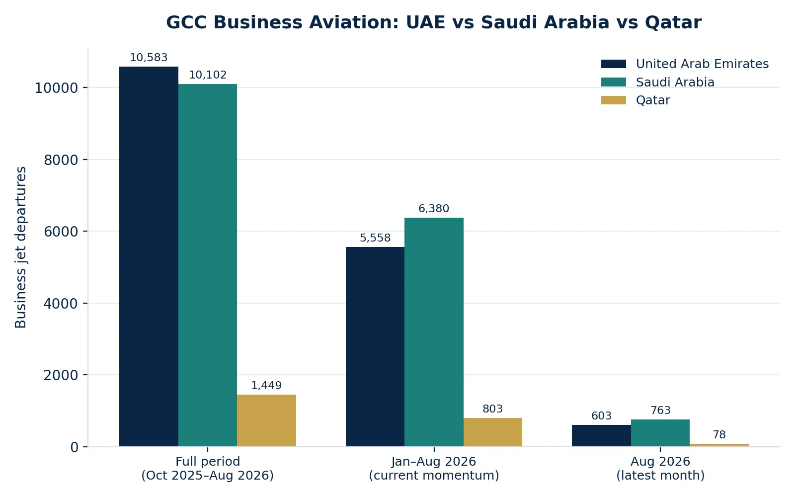
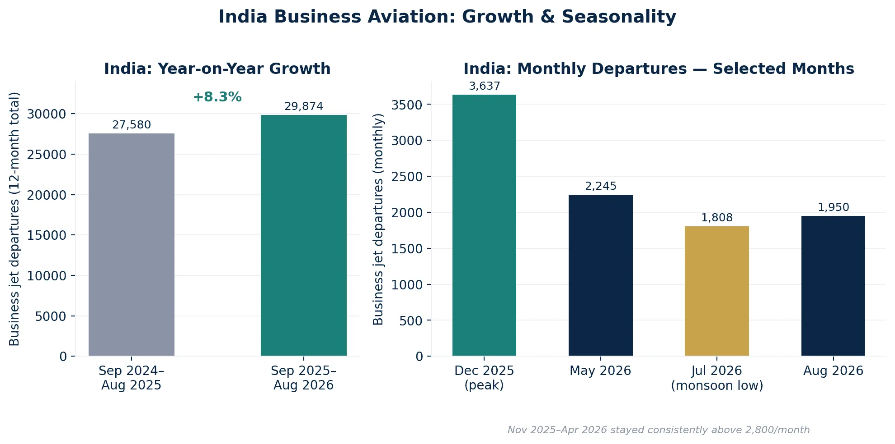

Private jet demand doesn't grow evenly across the world — and for travelers hoping to catch a discounted empty leg flight, that unevenness matters. More charter departures in a market means more aircraft repositioning after those charters, which means more empty leg opportunities. So we looked at the latest traffic data across three regions core to our network — the Gulf, India, and Turkey — to understand where private aviation is actually accelerating, and what that means if you're watching for empty legs on these routes.
The Gulf: Saudi Arabia Is Catching the UAE
For years, the UAE has been the undisputed center of Gulf business aviation. The data confirms it still holds that title — but only just, and the momentum has clearly shifted.
| Market | Departures (Oct 2025–Aug 2026) | Peak month | Latest full month (Aug 2026) |
|---|---|---|---|
| United Arab Emirates | 10,583 | Nov 2025: 1,763 | 603 |
| Saudi Arabia | 10,102 | May 2026: 1,173 | 763 |
| Qatar | 1,449 | Dec 2025: 264 | 78 |

The UAE remains the largest market over the full 11-month window — 10,583 departures against Saudi Arabia's 10,102, a gap of just 4.8%. But look at the trend rather than the total, and the story flips. From January to August 2026, Saudi Arabia recorded 6,380 departures against the UAE's 5,558 — Saudi is now outpacing the UAE by a wide margin on current momentum.
The two markets are also moving in opposite directions seasonally. The UAE peaked hard in October 2025–February 2026 (1,763 departures in November alone) and has cooled steadily since, down to 603 in August. Saudi Arabia built through spring, peaking at 1,173 in May, and has held up far better through summer at 763 departures in August — likely reflecting the pace of giga-project development, business travel tied to Vision 2030 initiatives, and a broader shift in where regional capital and events are concentrating.
Qatar remains a smaller, event-driven market — its December peak of 264 departures lines up with the winter events calendar, but volumes are a fraction of its two larger neighbors.
What this means for empty legs: Saudi Arabia's accelerating charter volume is the one to watch. More charter activity into and out of Riyadh and Jeddah means more repositioning flights — and currently far less competition for those routes in blog and search content than the UAE gets. If you fly the Gulf regularly, Saudi routes are worth registering for alerts on now, ahead of the market catching up in visibility.
India: An 8.3% Growth Story, Led by Delhi and Mumbai — But Not Only Them
India's business aviation market grew from 27,580 departures (Sep 2024–Aug 2025) to 29,874 (Sep 2025–Aug 2026) — an 8.3% year-on-year increase, and one of the stronger growth stories in the data.
| Full 12-month period | Departures | Change |
|---|---|---|
| Sep 2024–Aug 2025 | 27,580 | — |
| Sep 2025–Aug 2026 | 29,874 | +8.3% |

The growth wasn't even across the year. November 2025–April 2026 was the strongest stretch, consistently above 2,800 monthly departures and peaking at 3,637 in December 2025. Activity then softened through the 2026 monsoon season, dipping to 1,808 in July before recovering to 1,950 in August — a seasonal pattern worth planning around if you're timing a trip to or from India.
Where the traffic actually is
| Rank | Airport | Departures (24 months) |
|---|---|---|
| 1 | Delhi Indira Gandhi International | 8,795 |
| 2 | Mumbai Chhatrapati Shivaji Maharaj International | 7,915 |
| 3 | Ahmedabad Sardar Vallabhbhai Patel International | 3,299 |
| 4 | Bengaluru Kempegowda International | 3,167 |
| 5 | Chennai International | 2,808 |
| 6 | Pune International | 2,480 |
| 7 | Jaipur International | 2,281 |
| 8 | Hyderabad Rajiv Gandhi International | 2,105 |
| 9 | Hyderabad Begumpet | 1,830 |
| 10 | Bengaluru HAL | 1,351 |
Delhi and Mumbai together account for 16,710 departures — the clear core of India's business aviation network. But what stands out is how much activity sits outside those two hubs: Ahmedabad and Bengaluru each cleared 3,000 departures, and Pune, Jaipur, and both Hyderabad airports show meaningful volume. Bengaluru and Hyderabad each operate two active business aviation airports, pointing to a mix of scheduled-airport traffic and more flexible general aviation use.
Internationally, Dubai World Central was India's largest cross-border destination by far, with 1,228 arrivals — well ahead of London Luton (274), Singapore Seletar (268), Dubai International (246), Abu Dhabi (184), and Bangkok Don Mueang (205). That single data point confirms what the industry already assumes: India–Gulf is the dominant international private aviation corridor out of India, by a wide margin.
What this means for empty legs: If your routes touch India, the Delhi–Gulf and Mumbai–Gulf corridors are where repositioning inventory is most likely to appear, given how concentrated the international traffic is toward Dubai specifically. The secondary hubs — Ahmedabad, Bengaluru, Jaipur — are underserved by content and worth watching as India's business aviation footprint decentralizes. Our private jet charter desk handles enquiries across all these corridors.
Is Istanbul Becoming a Business Aviation Hub?
Turkey's data tells a more layered story: Istanbul is an established, strategically important hub — but the numbers don't yet show it accelerating.
| Period | Istanbul departures | Change |
|---|---|---|
| Calendar year 2024 | 10,873 | — |
| Calendar year 2025 | 11,331 | +4.2% |
| Jan–Aug 2025 | 7,944 | — |
| Jan–Aug 2026 | 7,677 | -3.4% |
Istanbul grew a solid 4.2% across calendar year 2025. But January–August 2026 came in 3.4% below the same period the year before — even though August 2026 itself (1,176 departures) beat August 2025 (1,068). That's a mixed signal: strong summer momentum, softer year overall.
What's genuinely interesting is Istanbul's share of the national picture. It represented 48.0% of all Turkish departures in January–August 2026, up sharply from 38.0% in the same period a year earlier. Istanbul's importance to Turkey's aviation market is growing even while its own year-on-year volume dipped slightly — suggesting other Turkish cities are declining faster than Istanbul, rather than Istanbul itself losing relevance.
Istanbul's real value: connectivity, not just volume
| Leading destination country | Departures from Istanbul |
|---|---|
| Turkey (domestic) | 9,490 |
| Greece | 2,172 |
| Russia | 1,808 |
| Italy | 1,798 |
| France | 1,692 |
| United Kingdom | 1,091 |
| Switzerland | 927 |
| United Arab Emirates | 895 |
| Germany | 791 |
| Cyprus | 712 |
Istanbul's role as a bridge between Europe, Russia, the Gulf, and North Africa shows clearly in the destination spread — Dubai (727 departures), Doha (180), Riyadh (166), Jeddah (140), Abu Dhabi (117), and Cairo (217) all appear alongside major European destinations like Athens, London, Nice, and Geneva. Domestically, Ankara and Bodrum lead as gateways into Turkey's corporate and leisure markets.
What this means for empty legs: Istanbul's value isn't raw growth — it's positioning. As a resilient, mature hub sitting directly between Europe and the Gulf, it's a strong candidate for empty legs on Europe–Middle East repositioning routes, even in a year where its own domestic volume dipped slightly.
What This Means If You're Watching for Empty Legs
Putting the three markets side by side:
- Saudi Arabia is the fastest-accelerating Gulf market right now — worth prioritizing over the UAE for route alerts, even though the UAE remains larger in total volume.
- India–Gulf, and specifically the Delhi/Mumbai–Dubai corridor, is the single most concentrated international route out of India — and the most likely place to find repositioning inventory if you fly that corridor.
- Istanbul functions as a genuine Europe–Gulf–MENA crossroads. Even without dramatic year-on-year growth, its connectivity makes it a consistently useful hub to watch for empty legs bridging Europe and the Middle East.